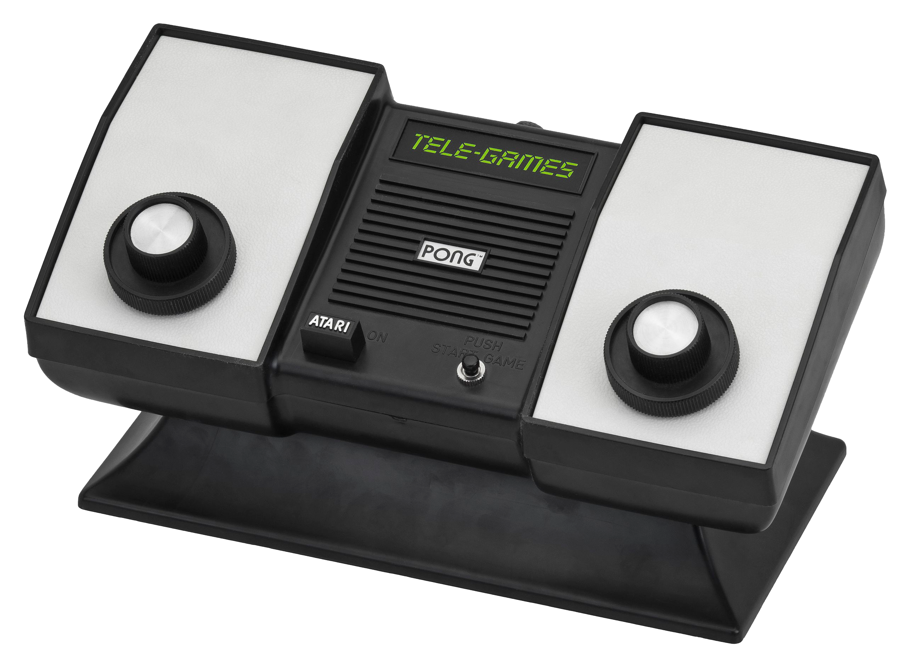
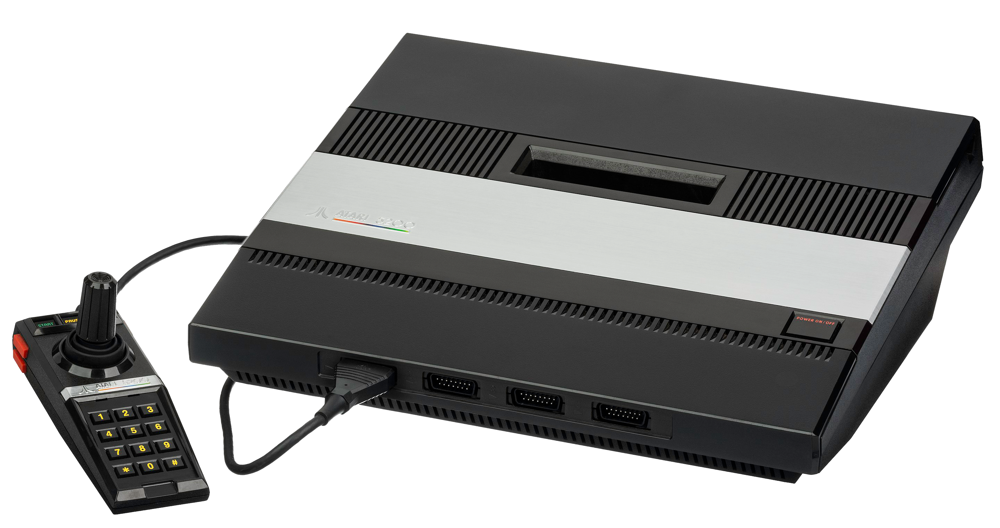
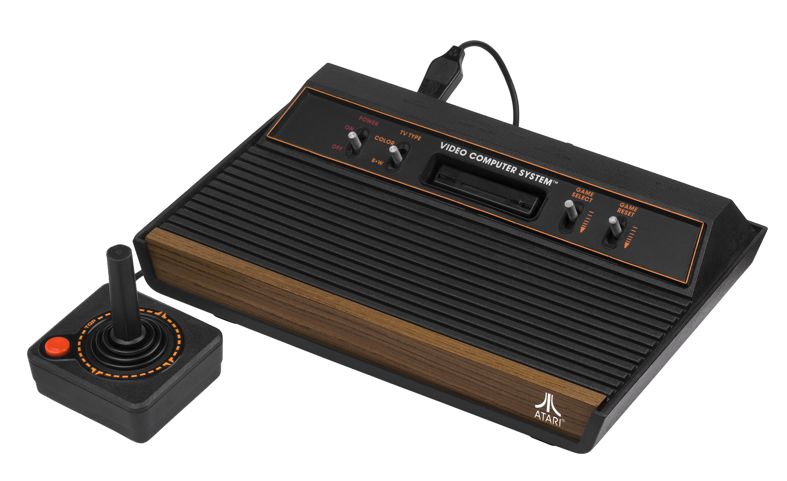

Atari History
Atari (/əˈtɑːri/) is a brand name that has been owned by several entities since its inception in 1972. It is currently owned by French company Atari SA (formerly Infogrames) through a subsidiary named Atari Interactive.The original Atari, Inc., founded in Sunnyvale, California, USA in 1972 by Nolan Bushnell and Ted Dabney, was a pioneer in arcade games, home video game consoles, and home computers. The company's products, such as Pong and the Atari 2600, helped define the electronic entertainment industry from the 1970s to the mid-1980s.The name comes from the Japanese term atari,
used while playing the ancient board game Go. The word atari means "to hit a target" in Japanese and is associated with good fortune; in Go, it indicates a situation where a player will be able to capture one or more stones of the opponent in the next move.[16]The Atari logo was designed by George Opperman, who was Atari's first in-house graphic designer, and drawn by Evelyn Seto.The design is known as "Fuji" for its resemblance to the Japanese mountain, although the logo's origins are unrelated to it. Opperman designed the logo intending for the silhouette to look like the letter A as in Atari and for its three "prongs" to resemble players and the midline of the "court" in the company's first hit game,Pong.[18]

1972-1984
In 1971, Nolan Bushnell and Ted Dabney founded a small engineering company, Syzygy Engineering,[19] that designed Computer Space, the world's first commercially available arcade video game, for Nutting Associates. On June 27, 1972, the two incorporated Atari, Inc. and soon hired Al Alcorn as their first design engineer. Bushnell asked Alcorn to produce an arcade version of the Magnavox Odyssey's Tennis game,[20] which would be named Pong. While Bushnell incorporated Atari in June 1972, Syzygy Company was never formally incorporated. Before Atari's incorporation, Bushnell considered various terms from the game Go, eventually choosing atari, referencing a position in the game when a group of stones is imminently in danger of being taken by one's opponent. Atari was incorporated in the state of California on June 27, 1972.[21]

In 1973, Atari secretly spawned a competitor called Kee Games, headed by Nolan's next-door neighbor Joe Keenan, to circumvent pinball distributors' insistence on exclusive distribution deals; both Atari and Kee could market nearly the same game to different distributors, each getting an "exclusive" deal. Joe Keenan's management of the subsidiary led to his appointment as president of Atari when Kee was absorbed into the company in 1974.[22] Atari 5200 (1982) In 1975, Atari's Grass Valley, California subsidiary Cyan Engineering started the development of a flexible console that was capable of playing the four existing Atari games. The result was the Atari Video Computer System, or VCS (later renamed 2600 when the 5200 was released). The introductory price of $199 (equivalent to $1,023 in 2022) included a console, two joysticks, a pair of paddles, and the Combat game cartridge.[23] Bushnell knew he had another potential hit on his hands but bringing the machine to market would be extremely expensive. Looking for outside investors, Bushnell sold Atari to Warner Communications in 1976 for $28 million. Nolan continued to have disagreements with Warner Management over the direction of the company, the discontinuation of the pinball division, and most importantly, the notion of discontinuing the 2600. In 1978, Kee Games was disbanded.[24] In December of that year, Bushnell was fired as chairman and co-CEO following an argument with Manny Gerard. He decided to leave the company rather than take an advisory role.
The development of a successor to the 2600 started as soon as it shipped. The original team estimated the 2600 had a lifespan of about three years; it then set forth to build the most powerful machine possible within that time frame. Mid-way into their effort the home computer revolution took off, leading to the addition of a keyboard and features to produce the Atari 800 and its smaller sibling, the 400. The new machines had some success when they finally became available in quantity in 1980. From this platform Atari released their next-generation game console in 1982, the Atari 5200. It was unsuccessful due to incompatibility with the 2600 game library, a small quantity of dedicated games, and notoriously unreliable controllers. Porting arcade games to home systems with inferior hardware was difficult. The ported version of Pac-Man for Atari 2600 omitted many of the visual features of the original to compensate for the lack of ROM space and the hardware struggled when multiple ghosts appeared on the screen creating a flickering effect.[25]Under Warner and Atari's chairman and CEO, Raymond Kassar, the company achieved its greatest success, selling millions of 2600s and computers. At its peak, Atari accounted for a third of Warner's annual income and was the fastest-growing company in US history at the time. It ran into problems in the early 1980s. Faced with fierce competition and price wars in the game console and home computer markets, Atari was never able to duplicate the success of the 2600.
These problems were followed by the video game crash of 1983, with losses that totaled more than $500 million. Warner's stock price slid from $60 to $20, and the company began searching for a buyer for its troubled division. In 1983, Ray Kassar resigned. Financial problems continued to mount and Kassar's successor, James J. Morgan, had less than a year in which to tackle the company's problems. He began a massive restructuring of the company and worked with Warner Communications in May 1984 to create "NATCO" (an acronym for New Atari Company). NATCO further streamlined the company's facilities, personnel, and spending. Unknown to James Morgan and the senior management of Atari, Warner had been in talks with Tramel Technology to buy Atari's consumer electronics and home computer divisions. Negotiating until close to midnight on July 1, 1984, Jack Tramiel purchased the home computing and game console divisions of Atari for $240 million in promissory notes and stocks. Warner gained a 20% stake in Tramel Technology, which was renamed Atari Corporation.[26] Warner retained the arcade division, continuing it under the name Atari Games, but sold it to Namco in 1985. Warner also sold the Ataritel division to Mitsubishi.
 1984-1996
Under Tramiel's ownership, Atari Corp. used the remaining stock of game console inventory to keep the company afloat while they finished development on a 16/32-bit computer system, the Atari ST. ("ST" stands for "sixteen/thirty-two", referring to the machines' 16-bit bus and 32-bit processor core.) In April 1985, they released an update to the 8-bit computer line, the Atari 65XE, the first in the Atari XE series. June 1985 saw the release of the Atari 130XE; Atari User Groups received early sneak-preview samples of the new Atari 520ST's, and major retailer shipments hit store shelves in September 1985 of Atari's new 32-bit Atari ST computers. In 1986, Atari launched two consoles designed under Warner — the Atari 2600jr and the Atari 7800 console (which saw limited release in 1984). Atari rebounded, earning a $25 million profit that year. Atari Portfolio (1989) In 1987, Atari acquired the Federated Group for $67.3 million, securing shelf space in over 60 stores in California, Arizona, Texas and Kansas[27] at a time when major American electronics outlets were reluctant to carry Atari-branded computers, and two-thirds of Atari's PC production was sold in Europe.[28] The Federated Group (not related to Federated Department Stores) was sold to Silo in 1989.[29] In 1988, the company unveiled the 1040STF and the Mega ST with a bit image manipulator chip, and launched its first parallel computer. The ATW-800 Transputer was based on the Inmos T800 CPU, which had a 32/64-bit architecture, ran at 15 million instructions per second (MIPS) and housed a Charity videochip that supported 16 million colors. The company continued to experiment with parallel computing aiming at B2B customers and graphic designers, but the transputer line failed to achieve commercial success.
In 1989, Atari released the Atari Lynx, the first ever handheld console with a color display and a backlit screen, to much fanfare. A shortage of parts kept the system from being released nationwide for the 1989 Christmas season, and the Lynx lost market share to Nintendo's Game Boy, which, despite only having a black and white display, was cheaper, had better battery life and had much higher availability. Tramiel emphasized computers over game consoles, but Atari's proprietary computer architecture and operating system fell victim to the success of the Wintel platform while the game market revived. In 1989, Atari Corp. sued Nintendo for $250 million, alleging it had an illegal monopoly.[30] Atari eventually lost the case when it was rejected by a US district court in 1992.[31] In 1991, Atari released its PCs ABC386SXII and ABC386DXII based on Intel's i386 chip.[32] Atari Jaguar (1993) In 1993, Atari positioned its Jaguar as the only 64-bit interactive media entertainment system available, but it sold poorly. It would be the last home console to be produced by Atari and the last to be produced by an American manufacturer until Microsoft's introduction of the Xbox in 2001. By 1996, a series of successful lawsuits[33] had left Atari with millions of dollars in the bank, but the failure of the Lynx and Jaguar left Atari without a product to sell. Tramiel and his family also wanted out of the business. The result was a rapid succession of changes in ownership. In July 1996, Atari merged with JTS Inc., a short-lived maker of hard disk drives, to form JTS Corp.[34][35][36][37] Atari's role in the new company largely became that of holder for the Atari properties and minor support, and consequently the name largely disappeared from the market.
1984-1999
After the sale of the consumer electronics and computer divisions to Jack Tramiel, Atari was renamed Atari Games Corporation. Atari Games retained most of the same employees and managers from the coin-operated games division and continued many of the divisions projects from before the transition. In 1985, a controlling interest in the coin-operated games division was sold to Namco, which also took the Atari Games name. Warner renamed Atari Games to Atari Holdings, which continued as a non-operating subsidiary until 1992. Meanwhile, Namco later lost interest in operating Atari Games. In 1987, Namco sold 33% of its shares to a group of employees led by then-president Hideyuki Nakajima.[38] He had been the president of Atari Games since 1985. Atari Ireland was a subsidiary of Atari Games that manufactured their games for the European market; while under Namco, Atari Ireland also manufactured Sega's Hang-On (1985) for the European market.[39]


Atari Games continued to manufacture arcade games and units, and starting in 1988, also sold cartridges for the Nintendo Entertainment System under the Tengen brand name, including a version of Tetris. The companies exchanged a number of lawsuits in the late 1980s related to disputes over the rights to Tetris and Tengen's circumvention of Nintendo's lockout chip, which prevented third parties from creating unauthorized games. The suit finally reached a settlement in 1994, with Atari Games paying Nintendo cash damages and use of several patent licenses.[40] In April 1996, after an unsuccessful bid by Atari co-founder Nolan Bushnell, the company was sold to WMS Industries, owners of the Williams, Bally and Midway arcade brands, which restored the use of the Atari Games name.[41][42] On November 19, 1999, Atari Games Corporation was renamed Midway Games West Inc.,[43][44] resulting in the Atari Games name no longer being used.
1998-2000
On March 13, 1998, JTS sold the Atari name and assets to Hasbro Interactive for $5 million, less than a fifth of what Warner Communications had paid 22 years earlier.[45][46] This transaction primarily involved the brand and intellectual property, which now fell under the Atari Interactive division of Hasbro Interactive. The brand name changed hands again in December 2000 when French software publisher Infogrames took over Hasbro Interactive.[47][48][49][50][51]
2001-2022
In October 2001, Infogrames Entertainment SA (IESA, now Atari SA) announced that it was "reinventing" the Atari brand with the launch of three new games featuring a prominent Atari branding on their boxarts: Splashdown, MX Rider and TransWorld Surf.[52] Infogrames used Atari as a brand name for games aimed at 18–34 year olds. Other Infogrames games under the Atari name included V-Rally 3, Neverwinter Nights, Stuntman and Enter the Matrix.
 On May 8, 2003, IESA had its majority-owned, but discrete US subsidiary Infogrames, Inc. officially renamed Atari, Inc.,[53] renamed its European operations to Atari Europe but kept the original name of the main company Infogrames Entertainment. The original Atari holdings division purchased from Hasbro, Hasbro Interactive, was also made a separate corporate entity renamed as Atari Interactive.
Between 2004 and 2011, Atari produced and marketed Atari Flashback retro consoles, reminiscent of the Atari 2600 design. Since 2011, these consoles have been produced by AtGames under the license from Atari. Atari Flashback Portable is a handheld game console sold since 2016. In April 2011, Atari re-released their back catalogue of arcade and Atari 2600 games to be played on mobile devices.[54]
On March 6, 2008, IESA made an offer to Atari, Inc. to buy out all remaining public shares for a value of $1.68 per share, or $11 million total.[55] The offer would make IESA sole owner of Atari, Inc., thus making it a privately held company.[56] On April 30, 2008, Atari, Inc. announced its intentions to accept Infogrames' buyout offer and to merge with Infogrames.[57][58] On October 8, 2008, IESA completed its acquisition of Atari, Inc., making it a wholly owned subsidiary.[14][59]
On December 9, 2008, Atari announced that it had acquired Cryptic Studios, a MMORPG developer.[60]
Namco Bandai purchased a 34% stake in Atari Europe on May 14, 2009, paving the way for its acquisition from IESA.[61] Atari had significant financial issues for several years prior, with losses in the tens of millions since 2005.[62]
In May 2009, Infogrames Entertainment SA, the parent company of Atari, and Atari Interactive, announced it would change its name to Atari SA.
In April 2010, Atari SA board member and former CEO David Gardner resigned. Original Atari co-founder Nolan Bushnell joined the board as a representative for Blubay holdings.[63]
As of March 31, 2011, the board of directors consisted of Frank Dangeard, Jim Wilson, Tom Virden, Gene Davis and Alexandra Fichelson.[3]
On January 21, 2013, the four related companies Atari, Atari Interactive, Humongous, and California US Holdings filed for Chapter 11 bankruptcy in the United States Bankruptcy Court for the Southern District of New York.[64] All three Ataris emerged from bankruptcy one year later and the entering of the social casino gaming industry with Atari Casino.[65] Frederic Chesnais, who now heads all three companies, stated that their entire operations consist of a staff of 10 people.[66]
On June 22, 2014, Atari announced a new corporate strategy that would include a focus on "new audiences", specifically "LGBT, social casinos, real-money gambling, and YouTube".[67]
On June 8, 2017, a short teaser video was released, promoting a new product;[68] and the following week Chesnais confirmed the company was developing a new game console – the hardware was stated to be based on PC technology, and still under development.[69] In mid July 2017 an Atari press release confirmed the existence of the aforementioned new hardware, referred to as the "Ataribox". The box design was derived from early Atari designs (e.g. 2600) with a ribbed top surface, and a rise at the back of the console; two versions were announced: one with a traditional wood veneer front, and the other with a glass front. Connectivity options were revealed, including HDMI, USB (x4), and SD card – the console was said to support both classic and current games.[70] Also, according to an official company statement of June 22, 2017, the product was to be initially launched via a crowdfunding campaign in order to minimize any financial risk to the parent company.[71]
On September 26, 2017, Atari sent out a press release about the new "Atari VCS", which confirmed more details about the console. It will run a Linux operating system, with full access to the underlying OS, but it will have a custom interface designed for the TV.[72]
On January 27, 2020, Atari announced a deal with GSD Group to build Atari Hotels, with the first breaking ground in Phoenix in mid-2020. Additional hotels were also planned in Las Vegas, Denver, Chicago, Austin, Seattle, San Francisco, and San Jose. The company plans to make the hotel experience immersive and accessible to all ages. Hotels are planned to include virtual and augmented reality technologies.[73][74][75]
On December 16, 2020, Atari shipped the first units of the Atari VCS exclusive to backers of the systems crowdfunding campaign. Atari urged the backers to give feedback on the system so that the company could make changes to improve the product on its official launch.[76]
In 2020, Atari launched its decentralized cryptocurrency Atari Token in equal partnership with the ICICB Group.[77][78][79][80][81][82] Atari Group announced in March 2020 that it granted ICICB a non-exclusive license to run a cryptocurrency online casino on Atari's website, based on the Atari Token.[83]
The group partnering with Atari opened a new company in Gibraltar called Atari Chain LTD.[84][85][86]
In March 2021, Atari extended its partnership with ICICB Group for the development of Atari branded hotels,[87][88][89] and the first hotels will be constructed at selected locations outside the United States, with Dubai, Gibraltar and Spain.[90][91][92][93]
On 18 April 2022, Atari announced the termination of all license agreements with ICICB Group and its subsidiaries ("ICICB"). The license agreements between Atari and ICICB, including the Atari Chain Limited license (the "Joint Venture") and the related licenses including hotel and casino licenses, have been terminated effective 18 April 2022. ICICB is not authorized to represent Atari or its brands in any manner.[94]
On May 8, 2003, IESA had its majority-owned, but discrete US subsidiary Infogrames, Inc. officially renamed Atari, Inc.,[53] renamed its European operations to Atari Europe but kept the original name of the main company Infogrames Entertainment. The original Atari holdings division purchased from Hasbro, Hasbro Interactive, was also made a separate corporate entity renamed as Atari Interactive.
Between 2004 and 2011, Atari produced and marketed Atari Flashback retro consoles, reminiscent of the Atari 2600 design. Since 2011, these consoles have been produced by AtGames under the license from Atari. Atari Flashback Portable is a handheld game console sold since 2016. In April 2011, Atari re-released their back catalogue of arcade and Atari 2600 games to be played on mobile devices.[54]
On March 6, 2008, IESA made an offer to Atari, Inc. to buy out all remaining public shares for a value of $1.68 per share, or $11 million total.[55] The offer would make IESA sole owner of Atari, Inc., thus making it a privately held company.[56] On April 30, 2008, Atari, Inc. announced its intentions to accept Infogrames' buyout offer and to merge with Infogrames.[57][58] On October 8, 2008, IESA completed its acquisition of Atari, Inc., making it a wholly owned subsidiary.[14][59]
On December 9, 2008, Atari announced that it had acquired Cryptic Studios, a MMORPG developer.[60]
Namco Bandai purchased a 34% stake in Atari Europe on May 14, 2009, paving the way for its acquisition from IESA.[61] Atari had significant financial issues for several years prior, with losses in the tens of millions since 2005.[62]
In May 2009, Infogrames Entertainment SA, the parent company of Atari, and Atari Interactive, announced it would change its name to Atari SA.
In April 2010, Atari SA board member and former CEO David Gardner resigned. Original Atari co-founder Nolan Bushnell joined the board as a representative for Blubay holdings.[63]
As of March 31, 2011, the board of directors consisted of Frank Dangeard, Jim Wilson, Tom Virden, Gene Davis and Alexandra Fichelson.[3]
On January 21, 2013, the four related companies Atari, Atari Interactive, Humongous, and California US Holdings filed for Chapter 11 bankruptcy in the United States Bankruptcy Court for the Southern District of New York.[64] All three Ataris emerged from bankruptcy one year later and the entering of the social casino gaming industry with Atari Casino.[65] Frederic Chesnais, who now heads all three companies, stated that their entire operations consist of a staff of 10 people.[66]
On June 22, 2014, Atari announced a new corporate strategy that would include a focus on "new audiences", specifically "LGBT, social casinos, real-money gambling, and YouTube".[67]
On June 8, 2017, a short teaser video was released, promoting a new product;[68] and the following week Chesnais confirmed the company was developing a new game console – the hardware was stated to be based on PC technology, and still under development.[69] In mid July 2017 an Atari press release confirmed the existence of the aforementioned new hardware, referred to as the "Ataribox". The box design was derived from early Atari designs (e.g. 2600) with a ribbed top surface, and a rise at the back of the console; two versions were announced: one with a traditional wood veneer front, and the other with a glass front. Connectivity options were revealed, including HDMI, USB (x4), and SD card – the console was said to support both classic and current games.[70] Also, according to an official company statement of June 22, 2017, the product was to be initially launched via a crowdfunding campaign in order to minimize any financial risk to the parent company.[71]
On September 26, 2017, Atari sent out a press release about the new "Atari VCS", which confirmed more details about the console. It will run a Linux operating system, with full access to the underlying OS, but it will have a custom interface designed for the TV.[72]
On January 27, 2020, Atari announced a deal with GSD Group to build Atari Hotels, with the first breaking ground in Phoenix in mid-2020. Additional hotels were also planned in Las Vegas, Denver, Chicago, Austin, Seattle, San Francisco, and San Jose. The company plans to make the hotel experience immersive and accessible to all ages. Hotels are planned to include virtual and augmented reality technologies.[73][74][75]
On December 16, 2020, Atari shipped the first units of the Atari VCS exclusive to backers of the systems crowdfunding campaign. Atari urged the backers to give feedback on the system so that the company could make changes to improve the product on its official launch.[76]
In 2020, Atari launched its decentralized cryptocurrency Atari Token in equal partnership with the ICICB Group.[77][78][79][80][81][82] Atari Group announced in March 2020 that it granted ICICB a non-exclusive license to run a cryptocurrency online casino on Atari's website, based on the Atari Token.[83]
The group partnering with Atari opened a new company in Gibraltar called Atari Chain LTD.[84][85][86]
In March 2021, Atari extended its partnership with ICICB Group for the development of Atari branded hotels,[87][88][89] and the first hotels will be constructed at selected locations outside the United States, with Dubai, Gibraltar and Spain.[90][91][92][93]
On 18 April 2022, Atari announced the termination of all license agreements with ICICB Group and its subsidiaries ("ICICB"). The license agreements between Atari and ICICB, including the Atari Chain Limited license (the "Joint Venture") and the related licenses including hotel and casino licenses, have been terminated effective 18 April 2022. ICICB is not authorized to represent Atari or its brands in any manner.[94]
SEE ALSO
Golden age of arcade video games
History of video games
REFERENCES
For use in arcade business only. Later adopted the Midway Games brand. "Atari Celebrates 40th Anniversary with New Game Releases and Special Promotions" (Press release). Atari. June 27, 2012. Retrieved June 28, 2012. "Atari word mark and logo are trademarks owned by Atari Interactive, Inc." Atari Inc. (March 31, 2003). "10-KT · For 3/31/03". Atari Inc. Archived from the original on January 27, 2008. Retrieved November 6, 2007. "ANNUAL FINANCIAL REPORT/REGISTRATION DOCUMENT Fiscal Year 2010/2011" (PDF). Atari, SA. 2011. Archived (PDF) from the original on October 25, 2012. Retrieved June 28, 2012. Sanger, David E. (July 3, 1984). "Warner Sells Atari To Tramiel". New York Times. pp. Late City Final Edition, Section D, Page 1, Column 6. Archived from the original on November 18, 2016. Atari Corp. (March 29, 1994). "Amendment to General Statement of Beneficial Ownership – Schedule 13D". Atari Inc. Archived from the original on April 11, 2008. Retrieved February 2, 2008. Current, Michael D. (2004–2007). "A Brief Timeline of the Atari Divisions Initially Retained by Warner Communications, July 1984 to Present". Archived from the original on December 19, 2007. Retrieved November 6, 2007. "Atari Corporation Part 2". Retro Gamer. No. 94. September 2011. p. 86. "Atari Agrees To Merge With Disk-Drive Maker". The New York Times. Bloomberg Business News. February 14, 1996. p. 1. Archived from the original on December 6, 2008. "FORM 8-K Filing for transfer of assets to Hasbro Interactive from JTS". Securities And Exchange Commission. February 23, 1998. Archived from the original on June 5, 2011. Retrieved November 6, 2007. "Hasbro Interactive Pursues Copyright Infringement Suit". Hasbro Interactive. February 8, 2000. Archived from the original on April 15, 2008. Retrieved November 6, 2007. "Infogrames Entertainment Corporate Profile and Annual Report" (PDF). Infogrames Entertainment SA. 2006. p. 7. Archived from the original (PDF) on November 27, 2007. Retrieved November 6, 2007. "Civilization III:Play The World Press Release". Infogrames Inc. May 8, 2002. Archived from the original on October 12, 2007. Retrieved November 6, 2007. Atari Inc. (March 31, 2003). "10-KT · For 3/31/03, Overview Subsection". Atari Inc. Archived from the original on January 27, 2008. Retrieved November 6, 2007. "Infogrames completes Atari Inc acquisition". October 11, 2008. Archived from the original on July 1, 2017. Retrieved December 30, 2016. "About Atari". Atari. Retrieved August 15, 2023. "Atari at Sensei's Library". senseis.xmp.net. Archived from the original on January 28, 2022. Marie, Meagan (2018). Women in Gaming: 100 Professionals of Play. Dorling Kindersley. p. 18. ISBN 978-0241395066. "The Glory of Atari's Original Logo". Kotaku. December 2011. Archived from the original on March 12, 2016. Retrieved March 11, 2016. "Atari Coin-Op/Arcade Systems". www.atarimuseum.com. Archived from the original on July 3, 2003. Retrieved July 8, 2016. Ador Yano. "Video game history". Ralphbaer.com. Archived from the original on December 23, 2011. Retrieved December 27, 2011. "California Secretary of State – California Business Search – Corporation Search Results". October 16, 2007. Archived from the original on October 16, 2007. Retrieved December 30, 2016. Monfort, Nick & Bogost, Ian (March 31, 2009) [1st. Pub. 2009]. "Chapter 2: Combat". Racing the Beam. MIT Press. pp. 20. ISBN 9780262012577. "Atari 2600 | Toys with a History | Toy Tales – Todd Coopee". December 28, 2015. Archived from the original on June 19, 2017. Retrieved July 8, 2016. "A History of Syzygy / Atari". Archived from the original on November 17, 2013. Retrieved December 30, 2016. Nicoll, Benjamin (2015). "Bridging the Gap: The Neo Geo, the Media Imaginary, and the Domestication of Arcade Games". Games and Culture. doi:10.1177/1555412015590048. S2CID 147981978. Sange, David E. (July 3, 1984). "Warner Sells Atari To Tramiel". The New York Times. pp. Late City Final Edition, Section D, Page 1, Column 6, 1115 words. Archived from the original on November 18, 2016. "Atari to Acquire Federated Group for $67.3 Million : Deal Would Give Video Pioneer Access to a Retail Network". Los Angeles Times. August 25, 1987. Archived from the original on April 2, 2013. Retrieved July 31, 2012. Pollack, Andrew (August 25, 1987). "Atari to Acquire Electronics Retailer". The New York Times. Archived from the original on December 13, 2013. Retrieved May 14, 2014. APPublished: November 11, 1989 (November 11, 1989). "COMPANY NEWS; Atari Is Selling 26 Federated Stores". The New York Times. Archived from the original on May 17, 2013. Retrieved July 31, 2012. "Nintendo Is Sued by Atari". The New York Times. February 2, 1989. Archived from the original on December 6, 2008. "COMPANY NEWS; Nintendo Suit by Atari Is Dismissed". The New York Times. May 16, 1992. Archived from the original on December 6, 2008. Atari 386 PC Brochure. Atari Inc. (June 5, 1995). "DEF 14A · For 6/5/95". Atari Inc. Archived from the original on December 6, 2008. Retrieved May 18, 2008. "Atari, Form 10-K405, Filing Date Apr 12, 1996". secdatabase.com. Archived from the original on May 16, 2013. Retrieved January 18, 2013. "Atari, Form 8-K, Current Report, Filing Date Aug 14, 1996". secdatabase.com. Archived from the original on May 16, 2013. Retrieved January 18, 2013. "Agreement and Plan of Reorganization – Atari Corp. and JT Storage Inc. – Sample Contracts and Business Forms". Archived from the original on December 9, 2006. Retrieved December 30, 2016. "ATARI CORPORATION AND JTS CORPORATION TO MERGE". Atari. Archived from the original on October 29, 1996. Retrieved October 28, 2014. McNeil, Steve (April 18, 2019). Hey! Listen!: A journey through the golden era of video games. Headline. p. 104. ISBN 9781472261342. "Overseas Readers Column: Atari Ireland Plan to Mfg. Sega's "Hang-On" for Europe" (PDF). Game Machine. No. 269. Amusement Press, Inc. October 15, 1985. p. 26. Archived (PDF) from the original on October 9, 2022. "Atari's Full-Court Press". GamePro. No. 59. IDG. June 1994. p. 184. "Tidbits...". Electronic Gaming Monthly. No. 82. Ziff Davis. May 1996. p. 17. "Time Warner to Quit Game Business". Next Generation. No. 21. Imagine Media. September 1996. p. 15. "Certificate of Amendment: Atari Games". California Secretary of State. December 22, 1999. "A History of AT Games / Atari Games / Midway Games West". mcurrent.name. Archived from the original on June 14, 2017. Retrieved January 2, 2018. "JTS, Form 8-K, Current Report, Filing Date Mar 9, 1998". secdatabase.com. Archived from the original on May 16, 2013. Retrieved January 18, 2013. Johnston, Chris (April 8, 2000). "Atari Goes to Hasbro". GameSpot. "Hasbro, Form 8-K, Current Report, Filing Date Dec 7, 2000". secdatabase.com. Archived from the original on May 16, 2013. Retrieved January 18, 2013. Walker, Trey (December 6, 2000). "Infogrames Acquires Hasbro Interactive". GameSpot. Ahmed, Shahed (December 6, 2000). "Infogrames Buys Hasbro". GameSpot. "Infogrames completes Hasbro Interactive acquisition". GameSpot. January 29, 2001. Graser, Mark (January 29, 2001). "Infogrames completes $100 mil Hasbro deal". Variety. Retrieved January 29, 2001. "Infogrames ready to ship first games under Atari brand". Gamespot.com. October 31, 2001. Retrieved September 9, 2011. "Atari, Form 8-K, Current Report, Filing Date May 8, 2003". secdatabase.com. Archived from the original on May 16, 2013. Retrieved January 18, 2013. "Atari's Greatest Hits (2011)". "Atari, Form 8-K, Current Report, Filing Date Mar 7, 2008" (PDF). secdatabase.com. Archived (PDF) from the original on May 16, 2013. Retrieved January 18, 2013. "Atari, Inc. Reports Receipt of Non-Binding Offer from Infogrames Entertainment S.A.: Financial News – Yahoo! Finance". May 29, 2008. Archived from the original on May 29, 2008. Retrieved December 30, 2016. "Atari, Form 8-K, Current Report, Filing Date May 1, 2008" (PDF). secdatabase.com. Archived (PDF) from the original on May 16, 2013. Retrieved January 18, 2013. "Infogrames Entertainment S.A. and Atari, Inc. Announce Agreement to Merge: Financial News – Yahoo! Finance". May 27, 2008. Archived from the original on May 27, 2008. Retrieved December 30, 2016. "Atari, Form 8-K, Current Report, Filing Date Oct 9, 2008" (PDF). secdatabase.com. Archived (PDF) from the original on May 16, 2013. Retrieved January 18, 2013. "Atari acquires Cryptic Studios". December 9, 2008. Archived from the original on August 30, 2009. "Namco Bandai To Swallow Atari Europe". Edge. May 14, 2009. Archived from the original on July 23, 2015. Retrieved May 30, 2009. "Atari, Form 10-K, Annual Report, Filing Date Jul 1, 2008" (PDF). secdatabase.com. Archived (PDF) from the original on May 16, 2013. Retrieved January 18, 2013. Andrew Webster (April 20, 2010). "Nolan Bushnell rejoins Atari, Phil Harrison leaves". Archived from the original on April 13, 2012. "Atari Files For Chapter 11 To Separate From French Parent" (Press release). PR Newswire. Archived from the original on September 26, 2013. Retrieved September 4, 2013. Brett Molina (March 26, 2014). "Atari resets with jump into social casino gaming". USA Today. Archived from the original on March 26, 2014. Retrieved March 26, 2014. Dean Takahashi (March 26, 2014). "Atari and FlowPlay team up to offer social casino games". VentureBeat. Archived from the original on November 26, 2016. Makuch, Eddie. "Iconic Pong, Asteroids Publisher Atari Reveals "Comeback Strategy"". GameSpot. Archived from the original on August 11, 2016. Retrieved August 7, 2016. "First look: A brand new Atari product. Years in the making", Ataribox www.ataribox.com, YouTube, June 8, 2017 Takahasi, Dean (June 16, 2017), "Atari CEO confirms the company is working on a new game console", venturebeat.com Walker, Alex (July 17, 2017), "The First Look At The Ataribox, Atari's New Console", www.kotaku.com.au Jarod (September 27, 2017). "Atari précise la nature de l'Ataribox". Gamekult. "Atari are launching a new gaming system, the 'Ataribox' and it runs Linux". GamingOnLinux. Retrieved September 26, 2017. "ATARI ANNOUNCES WORLD-CLASS VIDEO GAME-THEMED ATARI HOTELS First Atari Hotel to Begin Construction in Phoenix in Mid-2020". Atari Hotels. Retrieved February 2, 2020. "Game Company Atari To Open 8 Hotels In The U.S." Bisnow. Retrieved February 25, 2020. "Atari to Open 8 Video Game Hotels in the U.S." TripsToDiscover. Retrieved February 28, 2020. ATARI (December 16, 2020). "ATARI VCS: Shipping of the Indiegogo backer units Native integration of Google Chrome for enriched content Release of the dedicated VCS Companion App". GlobeNewswire News Room (Press release). Retrieved March 11, 2021. "Atari®️ Teams Up with Arkane Network to Integrate the Atari Token Across Digital Entertainment Ecosystem" (Press release). Atari Inc. May 14, 2020. Retrieved April 4, 2021 – via GlobeNewswire News Room. "Atari Extends Hotel Partnership with ICICB Group to more Countries in Europe and Africa, and Asia" (Press release). Atari. March 22, 2021. Retrieved March 29, 2021 – via GlobeNewswire News Room. "Atari Extends Hotel Partnership with ICICB Group to more Countries in Europe and Africa, and Asia". GlobeNewswire News Room (Press release). ATARI. March 22, 2021. Retrieved April 4, 2021. Trula, Esther Miguel (March 16, 2021). "Un hotel de Atari en Gibraltar: el último y loco proyecto turístico que aunará videojuegos con retrofuturismo". Magnet (in Spanish). Retrieved April 4, 2021. "Atari® Partners with ICICB Group and Grants Licensing Rights to Build Atari Hotels in Dubai, Gibraltar, and Spain". finance.yahoo.com. March 10, 2021. Retrieved April 4, 2021. "Atari :® Partners with ICICB Group and Grants Licensing Rights to Build Atari : Hotels in Dubai, Gibraltar, and Spain". MarketScreener. Retrieved April 4, 2021. "Crypto Currency Casino Launch One Of 2020 Goals For Atari Group". GamblingNews. March 19, 2020. Retrieved April 5, 2021. "Atari: Launch of the Atari Token" (Press release). ATARI. March 27, 2020. Retrieved March 29, 2021 – via GlobeNewswire News Room. "Atari Extends Hotel Partnership with ICICB Group to more Countries in Europe and Africa, and Asia". finance.yahoo.com. March 22, 2021. Retrieved April 5, 2021. "Atari® Partners with ICICB Group and Grants Licensing Rights to Build Atari Hotels in Dubai, Gibraltar, and Spain". finance.yahoo.com. March 10, 2021. Retrieved April 5, 2021. "Teams Up with Karma the Game of Destiny to Support In-Game Purchases Using Atari Token". www.gamasutra.com. Retrieved April 4, 2021. ATARI (October 16, 2020). "Atari Token: Public Sale of the Atari Token to begin October 29, 2020 on Bitcoin.com Exchange". GlobeNewswire News Room. Retrieved April 4, 2021. "Atari, ICICB Group Expand Hotel Partnership". licenseglobal.com. March 23, 2021. Retrieved April 5, 2021. "ATARI: Atari® Partners with ICICB Group and Grants Licensing Rights to Build Atari Hotels in Dubai, Gibraltar, and Spain". Bloomberg.com. March 10, 2021. Retrieved April 5, 2021. "Atari Signs Licencing Agreement With ICICB For Atari-Branded Hotels Outside US". inkedin.com. March 12, 2021. Retrieved April 5, 2021. "Videogame pioneers, formally announce plans for an Atari-themed hotel to be built in Gibraltar". www.gbc.gi. Retrieved April 5, 2021. "Atari Expands Hotel Licencing Deal with ICICB to More Countries; Shares Jump 16%". MarketScreener. March 22, 2021. Retrieved April 5, 2021. "Atari Announces Planned Creation of New Token and Termination of Joint Venture". atari.com. April 18, 2022.